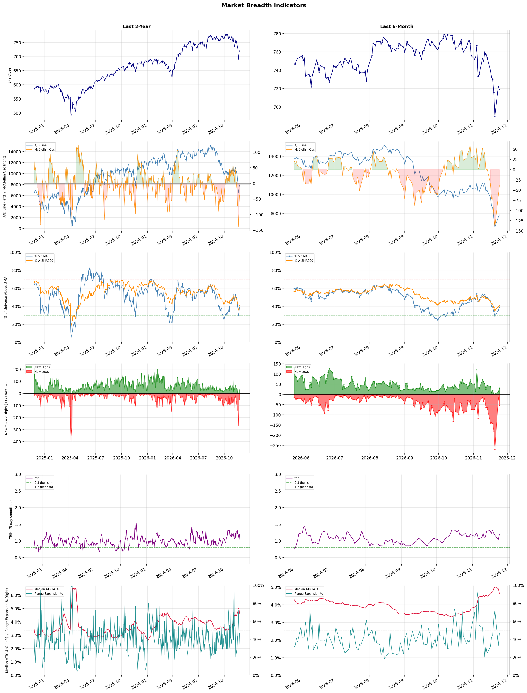

A daily market breadth and sector rotation report for active investors
| Item | Read |
|---|---|
| Regime | Defensive |
| Risk posture | Defensive |
| Universe | 1,310 stocks tracked · 31 new 52-week highs · 30 active swing setups |
| Breadth | only 39.0% of tracked stocks are above SMA50, new lows exceed new highs (55 vs 31), McClellan oscillator (breadth momentum) is negative at -39.3 |
| Leadership | Advertising Agencies, Insurance Brokers, and Discount Stores |
| Weakest groups | Other Industrial Metals & Mining, Uranium, and Electrical Equipment & Parts |
Use this report to prioritize research and chart review; validate entries, stops, liquidity, earnings, and risk before acting.
| Item | Read |
|---|---|
| Primary read | Defensive regime with Defensive risk posture. |
| Research queue | STGW, APP, EVC, MGNI, OMC |
| Leadership focus | Advertising Agencies, Insurance Brokers, and Discount Stores |
| Caution list | Other Industrial Metals & Mining, Uranium, and Electrical Equipment & Parts |
| Review prompt | Check extension risk, chart location, fundamentals, valuation, and earnings before using any research row. |
| Item | Read |
|---|---|
| Primary read | 3 active risk warnings; use screen output as watchlist input only. |
| Bullish screens | ARX, BLMN, CBRL, GILD, TREX |
| Bearish screens | none |
| Alerts / levels | Automated trigger, stop, ATR, liquidity, reward/risk, and event-risk levels are pending future enrichment. |
| Review prompt | Open the linked chart, define trigger and invalidation, then check liquidity and event risk independently. |
Risk Posture: Defensive — screen backdrop favors caution; require independent risk review before new exposure
Metric context: McClellan below -50 = elevated selling pressure; below -100 = washout territory. Range Expansion = share of stocks with daily range above their 20-day average. Signal Density = share of tracked names appearing in signal screens.
| Breadth Date | % > SMA50 | % > SMA200 | New Highs | New Lows | McClellan | Median Range | Avg Range | Median ATR14 | Range Expansion | Signal Density |
|---|---|---|---|---|---|---|---|---|---|---|
| 2026-11-24 | 39.0% | 41.1% | 31 | 55 | -39.3 | 4.0% | 4.9% | 4.6% | 46.6% | 0.3% |

Prior comparison date: November 23, 2026
| Metric | Prior | Current | Change |
|---|---|---|---|
| Regime | Defensive | Defensive | unchanged |
| Risk Posture | Defensive | Defensive | unchanged |
| % > SMA50 | 35.2% | 39.0% | +3.8 pts |
| % > SMA200 | 39.6% | 41.1% | +1.5 pts |
| New Highs | 14 | 31 | +17 |
| New Lows | 17 | 55 | -38 |
Top-10 industries entering: Household & Personal Products and Specialty Retail. Top-10 industries leaving: Airlines and REIT - Hotel & Motel. New multi-signal long setups: ARX, BLMN, BOX, CBRL, GILD, GKOS, ROIV, RPRX, TREX. New multi-signal short setups: none.
| Status | Tickers | Read |
|---|---|---|
| Added | ACHC, AEO, ALC, APP, ARX, AZN, BAX, BOX | New technical screen matches vs prior report. |
| Removed | AEE, CRK, CSIQ, CXM, DKNG, DXC, ENVX, ES | No longer present in today's technical screen matches. |
| Still Active | ARHS, BLMN, ELVN, EPRT, ORI, TREX, VTR | Appeared in both current and prior reports. |
| Promoted | BLMN, TREX | Model Screen Score improved by at least 15 points. |
| Downgraded | none | Model Screen Score declined by at least 15 points. |
| Direction | Industry | ETF | Prior Rank | Current Rank | Days | Rank Change |
|---|---|---|---|---|---|---|
| Rose | Airlines | N/A | 78 | 15 | 35 | +63 |
| Rose | Resorts & Casinos | N/A | 84 | 22 | 42 | +62 |
| Rose | REIT - Retail | N/A | 69 | 13 | 42 | +56 |
| Rose | REIT - Residential | XLRE | 72 | 24 | 42 | +48 |
| Rose | Advertising Agencies | N/A | 48 | 1 | 28 | +47 |
Bull: The airlines industry is experiencing a bullish trend due to a combination of robust demand recovery post-pandemic and improving financial performance, as highlighted by the soaring stock of American Airlines and the positive outlook from Zacks. Additionally, despite some disappointing earnings reports, such as that of United Airlines, investor sentiment remains strong, suggesting confidence in the sector's resilience and growth potential, as indicated by articles from Investor's Business Daily and Barron's. This overall optimism, coupled with a rising demand for travel, positions airlines favorably compared to other industries.
Bear: While the airlines industry may currently show a rising trend and some positive headlines, the underlying fundamentals present significant risks. High operational costs, including fuel prices and labor expenses, continue to pressure margins, and any economic downturn could quickly dampen travel demand. Additionally, the volatility in earnings reports, such as those from United Airlines, suggests that the sector remains vulnerable to external shocks and may not sustain the current bullish sentiment in the long term.
Verdict: The airlines industry is experiencing a bullish trend driven by a strong post-pandemic demand recovery and improving financial performance, as evidenced by rising stock prices and positive market sentiment. However, key risks remain, particularly high operational costs and potential economic downturns that could negatively impact travel demand and expose the sector to volatility in earnings. Investors should remain cautious and monitor economic indicators closely to assess the sustainability of this growth.
Sources: Google News
Bull: The Resorts & Casinos industry is experiencing a bullish trend primarily due to a resurgence in consumer spending and travel, as indicated by headlines discussing growth prospects for casino stocks and investment strategies for 2026. The positive sentiment surrounding companies like Red Rock Resorts, Inc. (RRR) suggests strong operational performance and increasing demand for leisure activities post-pandemic, further driving investor interest and confidence in the sector's resilience amid broader economic headwinds. Additionally, the focus on growth opportunities in gaming stocks highlights the industry's potential for expansion, contributing to its rising relative strength compared to other sectors.
Bear: While the Resorts & Casinos industry may currently exhibit a rising relative strength, this trend could be misleading due to several underlying headwinds. Increased consumer spending and travel may not be sustainable, as inflationary pressures and economic uncertainty could lead to a pullback in discretionary spending. Moreover, the industry's reliance on tourism makes it vulnerable to geopolitical risks, regulatory changes, and potential shifts in consumer preferences, which could dampen growth prospects for companies like Red Rock Resorts, Inc. (RRR) in the long term.
Verdict: The Resorts & Casinos industry is likely experiencing a bullish trend due to a rebound in consumer spending and travel, driven by pent-up demand for leisure activities following the pandemic. However, key risks persist, including potential economic headwinds from inflation and geopolitical uncertainties that could impact discretionary spending and tourism, necessitating cautious investment strategies in this sector. Investors should closely monitor these economic indicators and consumer sentiment to gauge the sustainability of this growth.
Sources: Google News
Bull: The rising relative strength of the Retail REIT sector can be attributed to a combination of resilient consumer spending and strategic positioning amidst economic headwinds. As highlighted by Yahoo Finance, despite higher interest rates, certain Retail REITs are still considered attractive investments, suggesting that they are effectively navigating challenges while maintaining strong cash flows. Additionally, the positive sentiment reflected in Morningstar's recommendations and the interest from Singapore investors in retail over banks indicate a growing confidence in the sector's ability to deliver consistent returns, particularly through dividends, as noted by The Motley Fool.
Bear: While the bull thesis emphasizes resilient consumer spending and strategic positioning, it overlooks the significant pressures Retail REITs face from rising interest rates, which can increase borrowing costs and compress margins. Additionally, the shift toward e-commerce and changing consumer preferences may lead to higher vacancy rates in physical retail spaces, undermining the long-term viability of these investments despite short-term dividend attractiveness. Furthermore, the positive sentiment from certain analysts does not account for the potential economic downturns that could severely impact retail foot traffic and sales, leading to a more cautious outlook for the sector.
Verdict: The Retail REIT sector's rising strength is fundamentally driven by resilient consumer spending and effective management strategies that allow these entities to maintain strong cash flows despite economic challenges. However, investors should remain cautious of the key risk posed by rising interest rates, which can increase borrowing costs and potentially compress margins, alongside the ongoing shift towards e-commerce that may elevate vacancy rates in physical retail spaces.
Sources: Google News
Bull: The rising relative strength of the Residential REIT sector can be attributed to a combination of strong demand for rental housing and positive sentiment reflected in recent analyses, such as those from Morningstar and US News Money, which highlight the best residential REITs to buy. Additionally, the mention of resilience in the face of challenging market trends by TradingView suggests that these REITs are effectively navigating economic uncertainties, further bolstering investor confidence in their long-term growth potential.
Bear: While the rising relative strength of the Residential REIT sector may seem promising, it is essential to consider the broader economic context, including rising interest rates and inflation, which can significantly impact affordability and demand for rental housing. Additionally, the recent headlines may reflect short-term optimism rather than a sustainable growth trajectory, as many analysts often overlook the potential for increased supply in the housing market and the risk of a rental market correction, which could undermine the long-term viability of these investments.
Verdict: The Residential REIT sector's rising strength is fundamentally driven by robust demand for rental housing, supported by positive sentiment from analysts highlighting top investment opportunities. However, investors should remain cautious of the key risk posed by rising interest rates and inflation, which could dampen affordability and lead to a potential oversupply in the housing market, threatening the long-term sustainability of these investments.
Sources: Google News
Bull: The Advertising Agencies sector is experiencing rising relative strength primarily due to the increasing integration of artificial intelligence in marketing strategies, as highlighted by Morningstar's focus on AI stocks, which is driving efficiency and innovation within the industry. Additionally, the positive sentiment around specific companies like Omnicom Group, as noted in TradingView, suggests strong earnings potential and market confidence, further bolstering the sector's attractiveness amidst a recovering economy. The emphasis on advertising technology and its projected growth, as discussed by The Motley Fool, also indicates a robust future outlook for the industry, making it a compelling investment opportunity.
Bear: While the integration of artificial intelligence in marketing may drive short-term efficiencies, it also poses significant risks, including increased competition and potential job displacement, which could lead to higher operational costs and lower profit margins for traditional advertising agencies. Furthermore, the positive sentiment around specific companies like Omnicom Group may be overly optimistic, as the broader economic recovery remains fragile, with potential headwinds such as rising interest rates and inflation that could dampen advertising budgets and overall industry growth. Lastly, the hype surrounding advertising technology might not translate into sustainable long-term growth, as companies may struggle to differentiate themselves in an increasingly crowded market.
Verdict: The Advertising Agencies sector is likely rising due to the transformative impact of artificial intelligence on marketing strategies, enhancing efficiency and innovation, which is attracting investor interest and boosting company valuations. However, a key risk to monitor is the potential for increased competition and job displacement, which could pressure profit margins and be exacerbated by a fragile economic recovery characterized by rising interest rates and inflation that may constrain advertising budgets. Investors should consider these dynamics when evaluating opportunities in this sector.
Sources: Google News
| Direction | Industry | ETF | Prior Rank | Current Rank | Days | Rank Change |
|---|---|---|---|---|---|---|
| Fell | Copper | COPX | 3 | 83 | 42 | -80 |
| Fell | Oil & Gas Refining & Marketing | CRAK | 1 | 64 | 42 | -63 |
| Fell | Oil & Gas E&P | XOP | 1 | 63 | 28 | -62 |
| Fell | Steel | SLX | 10 | 71 | 42 | -61 |
| Fell | Semiconductors | SOXX | 20 | 81 | 42 | -61 |
Bear: While the bull analyst attributes the recent decline in copper's relative strength primarily to tariff uncertainty and macroeconomic concerns, it's crucial to recognize that the long-term demand for copper may be overstated. The anticipated growth in sectors like AI and renewable energy may not materialize as quickly or robustly as projected, especially given the potential for economic slowdowns and rising interest rates that could dampen industrial activity. Furthermore, the volatility in copper prices, as evidenced by the significant drops in major stocks, reflects deeper structural issues in the market, such as overproduction and diminishing returns on copper mining investments, which could lead to a prolonged bearish trend.
Bull: The recent decline in copper's relative strength can be attributed to heightened uncertainty surrounding tariffs, as indicated by the headline "Copper Stocks Tumble as Tariff Doubt Reverses Record Rally," which has negatively impacted investor sentiment and led to significant drops in major copper stocks like Freeport-McMoRan and Teck Resources. Additionally, while there is optimism about the long-term potential of copper driven by sectors like AI, as noted in the headlines discussing the best stocks for the AI boom, the immediate market reaction suggests that macroeconomic concerns, including trade policies and potential economic slowdowns, are overshadowing these positive narratives.
Verdict: The recent decline in copper prices is primarily driven by heightened uncertainty around tariffs and macroeconomic concerns, which have overshadowed long-term growth narratives in sectors like AI and renewable energy. However, a key risk from the bear case is the potential for overestimated demand growth in these sectors, compounded by rising interest rates and structural issues like overproduction, which could lead to a prolonged bearish trend in the copper market. Investors should closely monitor macroeconomic indicators and industry fundamentals to navigate this volatility effectively.
Sources: Google News
Bear: While the bull analyst highlights select strong performers and future growth potential, the broader Oil & Gas Refining & Marketing sector faces significant headwinds that could undermine its recovery. The declining relative strength trend indicates persistent challenges such as regulatory pressures, increasing competition from renewable energy sources, and the ongoing volatility in crude oil prices, which can severely compress refining margins. Additionally, the market's shift towards more sustainable energy solutions may lead to a long-term decline in demand for traditional refining operations, suggesting that the optimism around select stocks may not be indicative of the sector's overall health.
Bull: The Oil & Gas Refining & Marketing sector is experiencing a decline in relative strength primarily due to shifting market sentiment and competitive pressures, as highlighted by recent headlines emphasizing the strong performance of select oil stocks and the anticipation of future growth in the industry. The focus on stocks that "crushed third-quarter earnings estimates" suggests that while some companies are thriving, overall sector performance may be hampered by broader economic concerns or volatility in crude oil prices, which can impact refining margins. Additionally, the mention of long-term investment strategies for 2026 indicates that investors may be reallocating their portfolios towards more promising segments within the energy sector, leading to a relative decline in interest for refining and marketing firms.
Verdict: The Oil & Gas Refining & Marketing sector is likely experiencing a decline due to a combination of shifting investor sentiment towards more sustainable energy solutions and ongoing volatility in crude oil prices, which pressures refining margins. Key risks include regulatory pressures and increasing competition from renewables, which could further diminish demand for traditional refining operations and hinder any potential recovery in the sector. Investors should closely monitor these trends and consider reallocating to more resilient segments of the energy market.
Sources: Google News
Bear: While the bull analyst highlights macroeconomic factors and shifting market sentiment, the fundamental challenges facing the Oil & Gas E&P sector remain significant and could outweigh any potential optimism from international outlooks. Falling relative strength trends indicate a lack of investor confidence, and the persistent volatility in crude prices, exacerbated by geopolitical tensions and increasing regulatory pressures on fossil fuels, suggest that the sector may struggle to attract sustained investment. Furthermore, the growing emphasis on renewable energy and ESG considerations could further divert capital away from traditional oil and gas investments, casting doubt on the long-term viability of the E&P sector.
Bull: The relative weakness in the Oil & Gas E&P sector can be attributed to a combination of macroeconomic factors and market sentiment shifting towards other industries, as highlighted in recent headlines. The focus on international E&P outlooks and specific stock recommendations, such as Northern Oil and Gas, suggests a competitive landscape where investors may be cautious about domestic shale production amidst fluctuating crude prices and geopolitical uncertainties, as indicated by the "Crude Awakening" headline. Additionally, the emphasis on long-term investment strategies in energy stocks, as seen in articles from Morningstar and The Motley Fool, may reflect a broader market trend favoring stability and growth in alternative sectors over the more volatile oil and gas industry in the short term.
Verdict: The Oil & Gas E&P sector is experiencing a decline primarily due to persistent volatility in crude prices and increasing regulatory pressures, which are undermining investor confidence and leading to a shift towards renewable energy investments. The key risk from the bear case lies in the potential for sustained capital diversion away from traditional fossil fuels, driven by growing ESG considerations and a broader market sentiment favoring stability in alternative sectors. Investors should closely monitor geopolitical developments and regulatory changes that could further impact the sector's recovery prospects.
Sources: Google News
Bear: While the bull analyst highlights potential long-term growth opportunities in the steel industry, the persistent decline in relative strength signals deeper, unresolved issues that may overshadow these prospects. The emphasis on sustainable practices, such as the "green iron trade," could lead to significant short-term costs and operational disruptions for traditional steel producers, further exacerbating price pressures and diminishing profitability. Additionally, fluctuating demand driven by macroeconomic uncertainties raises concerns about the industry's ability to sustain any recent gains, suggesting that the current optimism may be overly optimistic in the face of these headwinds.
Bull: The recent decline in the relative strength of the steel industry can be attributed to broader macroeconomic challenges, including fluctuating demand and price pressures, as highlighted by the headlines discussing industry gains amid higher prices and the focus on challenges faced by steel producers. Additionally, the emphasis on the "green iron trade" suggests a shift in industry dynamics, as companies may be investing in sustainable practices, potentially diverting resources from traditional production methods and impacting short-term performance. However, these developments also indicate a long-term opportunity for growth as the industry adapts to changing market conditions.
Verdict: The steel industry's recent decline can be fundamentally attributed to macroeconomic challenges, including fluctuating demand and price pressures, compounded by the transition towards sustainable practices like the "green iron trade." While this shift presents long-term growth opportunities, the key risk lies in the potential for short-term operational disruptions and increased costs that could further strain profitability and undermine any recent gains. Investors should closely monitor demand trends and cost management strategies within the industry to gauge future performance.
Sources: Google News
Bear: While the bull analyst attributes the semiconductor sector's decline to macroeconomic concerns and a temporary market correction, the reality is that the industry's fundamentals are deteriorating due to overcapacity, supply chain issues, and waning demand for consumer electronics. The worst two-month slump since 2001 indicates a potential structural shift in the market, where investors may be recognizing that the explosive growth seen during the pandemic was unsustainable, leading to a more cautious outlook on future revenue growth and profitability across the sector.
Bull: The semiconductor sector is experiencing a decline in relative strength primarily due to a significant sell-off driven by macroeconomic concerns and shifting investor sentiment, as highlighted by headlines indicating that money is rotating out of AI and semiconductor stocks. This trend is exacerbated by reports of the worst two-month slump since 2001, suggesting that broader economic factors, such as rising interest rates and inflation fears, are prompting investors to seek safer assets outside of high-growth sectors like semiconductors. Additionally, the recent downturn in stocks like Camtek and MKS reflects a market correction that may provide a buying opportunity for investors looking for robust revenue growth in select semiconductor companies.
Verdict: The semiconductor industry's decline is primarily driven by a combination of macroeconomic pressures, such as rising interest rates and inflation fears, alongside deteriorating fundamentals characterized by overcapacity and reduced demand for consumer electronics. Investors should be cautious of the bear case's key risk: the potential for a structural shift in the market that could lead to prolonged weakness in revenue growth and profitability, making it essential to focus on companies with strong fundamentals and adaptive strategies in this evolving landscape.
Sources: Google News
| Industry | Rank | ETF | 7d | 14d | 28d | 42d | Chg 42d | Size | 20D | 60D | Composite | Active Setups |
|---|---|---|---|---|---|---|---|---|---|---|---|---|
| Advertising Agencies | 1 | N/A | 1 | 1 | 48 | 44 | +43 | 7 | 22.1% | 11.2% | 0.968 | 0 |
| Insurance Brokers | 2 | N/A | 6 | 12 | 9 | 46 | +44 | 6 | 8.4% | 6.7% | 0.950 | 0 |
| Discount Stores | 3 | XRT | 2 | 6 | 19 | 5 | +2 | 7 | 12.2% | 17.7% | 0.946 | 0 |
| Restaurants | 4 | N/A | 11 | 11 | 27 | 23 | +19 | 16 | 12.6% | 8.6% | 0.888 | 1 |
| Specialty Retail | 5 | XRT | 8 | 4 | 13 | 19 | +14 | 13 | 7.5% | 17.5% | 0.863 | 1 |
| Apparel Manufacturing | 6 | N/A | 3 | 2 | 7 | 14 | +8 | 6 | 7.9% | 21.5% | 0.859 | 1 |
| Insurance - Property & Casualty | 7 | KIE | 7 | 20 | 15 | 29 | +22 | 8 | 4.6% | 5.9% | 0.847 | 1 |
| Beverages - Non-Alcoholic | 8 | XLP | 10 | 10 | 24 | 33 | +25 | 7 | 5.8% | 3.2% | 0.834 | 0 |
| Household & Personal Products | 9 | XLP | 9 | 5 | 4 | 8 | -1 | 11 | 3.8% | 8.9% | 0.814 | 0 |
| Medical Care Facilities | 10 | IHF | 5 | 7 | 6 | 16 | +6 | 9 | 2.2% | 13.7% | 0.811 | 0 |
Rank columns (7d–42d) show the industry's rank that many trading days ago — lower is stronger. Chg 42d = rank change vs 42 trading days ago — positive means the industry moved up. 20D and 60D are the mean stock return within the industry over that period. Active Setups: count of today's swing-trade candidates from this industry appearing across all signal screens.
| Industry | Rank | ETF | 7d | 14d | 28d | 42d | Chg 42d | Size | 20D | 60D | Composite | Active Setups |
|---|---|---|---|---|---|---|---|---|---|---|---|---|
| Other Industrial Metals & Mining | 87 | N/A | 87 | 86 | 85 | 81 | -6 | 21 | -33.4% | -51.2% | 0.020 | 0 |
| Uranium | 86 | URA | 86 | 87 | 87 | 85 | -1 | 6 | -32.4% | -51.7% | 0.024 | 0 |
| Electrical Equipment & Parts | 85 | XLI | 85 | 85 | 86 | 78 | -7 | 12 | -31.1% | -44.0% | 0.050 | 0 |
| Computer Hardware | 84 | XLK | 83 | 84 | 60 | 32 | -52 | 15 | -34.4% | -38.5% | 0.053 | 0 |
| Copper | 83 | COPX | 84 | 76 | 62 | 3 | -80 | 6 | -30.8% | -40.6% | 0.060 | 0 |
| Chemicals | 82 | N/A | 69 | 71 | 67 | 82 | 0 | 8 | -23.6% | -30.1% | 0.080 | 0 |
| Semiconductors | 81 | SOXX | 75 | 79 | 56 | 20 | -61 | 37 | -26.1% | -27.4% | 0.099 | 0 |
| Solar | 80 | TAN | 71 | 67 | 78 | 76 | -4 | 8 | -21.1% | -29.5% | 0.101 | 0 |
| Semiconductor Equipment & Materials | 79 | SOXX | 82 | 83 | 76 | 22 | -57 | 17 | -22.9% | -28.3% | 0.105 | 0 |
| Aerospace & Defense | 78 | ITA | 70 | 63 | 82 | 83 | +5 | 26 | -21.7% | -34.2% | 0.111 | 0 |
Rank columns (7d–42d) show the industry's rank that many trading days ago — lower is stronger. Chg 42d = rank change vs 42 trading days ago — positive means the industry moved up. 20D and 60D are the mean stock return within the industry over that period. Active Setups: count of today's swing-trade candidates from this industry appearing across all signal screens.
These are research candidates from top-ranked stocks, capped at five names per industry to avoid over-concentration. Returns shown (60D, 120D, 250D) are historical — they reflect where prices have already moved, not forward expectations. Extension Risk flags names that may require extra patience or a better entry point. They are not buy signals.
Chart: TV = TradingView chart (opens in browser); PDF = local chart file (if downloaded).
| Ticker | Name | Industry | Industry Rank | Market Cap | 60D Hist | 120D Hist | 250D Hist | Extension Risk | Research Reason | Chart |
|---|---|---|---|---|---|---|---|---|---|---|
| STGW | Stagwell | Advertising Agencies | 1 | N/A | 24.4% | 61.4% | 98.9% | Constructive | Top-ranked in industry | TV |
| APP | Applovin | Advertising Agencies | 1 | N/A | 22.1% | -31.8% | -31.5% | Constructive | Top-ranked in industry | TV |
| EVC | Entravision Communications | Advertising Agencies | 1 | N/A | 13.2% | 0.3% | 246.7% | Constructive | Top-ranked in industry | TV |
| MGNI | Magnite | Advertising Agencies | 1 | N/A | 12.0% | 77.1% | 77.3% | Constructive | Top-ranked in industry | TV |
| OMC | Omnicom Group | Advertising Agencies | 1 | N/A | 3.0% | 20.5% | 27.6% | Constructive | Top-ranked in industry | TV |
| MRSH | Marsh | Insurance Brokers | 2 | N/A | 13.0% | 33.7% | 19.7% | Constructive | Top-ranked in industry | TV |
| AJG | Arthur J. Gallagher | Insurance Brokers | 2 | N/A | 9.7% | 36.8% | 16.0% | Constructive | Top-ranked in industry | TV |
| AON | Aon PLC | Insurance Brokers | 2 | N/A | 6.9% | 6.9% | -1.6% | Constructive | Top-ranked in industry | TV |
| BRO | Brown & Brown | Insurance Brokers | 2 | N/A | 5.6% | 33.1% | -4.6% | Constructive | Top-ranked in industry | TV |
| BWIN | Baldwin Insurance Group | Insurance Brokers | 2 | N/A | 4.3% | 67.3% | 17.1% | Constructive | Top-ranked in industry | TV |
| WMT | Walmart | Discount Stores | 3 | N/A | 26.2% | 12.6% | 24.7% | Constructive | Top-ranked in industry | TV |
| OLLI | Ollie's Bargain Outlet | Discount Stores | 3 | N/A | 25.1% | 26.7% | -23.6% | Constructive | Top-ranked in industry | TV |
| DLTR | Dollar Tree | Discount Stores | 3 | N/A | 22.2% | 41.5% | 46.4% | Constructive | Top-ranked in industry | TV |
| COST | Costco | Discount Stores | 3 | N/A | 15.8% | 12.6% | 22.8% | Constructive | Top-ranked in industry | TV |
| TGT | Target | Discount Stores | 3 | N/A | 10.2% | 44.3% | 110.4% | Constructive | Top-ranked in industry | TV |
| SG | Sweetgreen | Restaurants | 4 | N/A | 73.7% | 64.0% | 76.2% | Extended | Top-ranked in industry; extended | TV |
| WING | Wingstop | Restaurants | 4 | N/A | 41.7% | 7.7% | -40.6% | Constructive | Top-ranked in industry | TV |
| WEN | The Wendy's Co | Restaurants | 4 | N/A | 4.3% | 28.2% | 8.3% | Constructive | Top-ranked in industry | TV |
| BLMN | Bloomin Brands | Restaurants | 4 | N/A | 3.2% | 48.9% | 54.1% | Constructive | Top-ranked in industry | TV |
| CMG | Chipotle Mexican Grill | Restaurants | 4 | N/A | -2.6% | 31.5% | 10.9% | Lagging | Top-ranked in industry; lagging | TV |
These are technical screen matches from existing signal files. They are not trade recommendations. Trigger, stop, ATR, liquidity, reward/risk, and event risk still require separate validation until those inputs are available.
Model Screen Score is weighted by signal count, industry rank, freshness, and setup type. It is not a probability of profit, expected return, or suitability rating. Industry cap: max 3 candidates per industry.
Signal glossary: Momentum Pullback = stock in an uptrend that has pulled back 10–30% and shows re-entry conditions. MA Compression = short- and long-term moving averages converging, often preceding a directional move. Three-Day Up/Down = three consecutive closes in the same direction. New 52Wk High/Low = price reached a new annual extreme.
Chart: TV = TradingView chart (opens in browser); PDF = local chart file (if downloaded).
| Ticker | Industry | Setups | Close | Industry Rank | Signal Count | Model Screen Score | Reason | Chart |
|---|---|---|---|---|---|---|---|---|
| ARX | Insurance Brokers | New 52Wk High; Three-Day Up | 19.92 | 2 | 2 | 100 | Multi-signal; top industry breakout | TV |
| BLMN | Restaurants | Momentum Pullback; Three-Day Up | 10.63 | 4 | 2 | 93 | Multi-signal; top industry pullback | TV |
| CBRL | Restaurants | New 52Wk High; Three-Day Up | 75.19 | 4 | 2 | 93 | Multi-signal; top industry breakout | TV |
| GILD | Drug Manufacturers - General | New 52Wk High; Three-Day Up | 178.29 | 12 | 2 | 85 | Multi-signal; new-high strength | TV |
| TREX | Building Products & Equipment | Momentum Pullback; Three-Day Up | 52.53 | 33 | 2 | 70 | Multi-signal; pullback setup | TV |
| GKOS | Medical Devices | New 52Wk High; Three-Day Up | 256.98 | 34 | 2 | 70 | Multi-signal; new-high strength | TV |
| ELVN | Biotechnology | Momentum Pullback; Three-Day Up | 51.26 | 42 | 2 | 65 | Multi-signal; pullback setup | TV |
| ROIV | Biotechnology | New 52Wk High; Three-Day Up | 42.34 | 42 | 2 | 65 | Multi-signal; new-high strength | TV |
| RPRX | Biotechnology | New 52Wk High; Three-Day Up | 71.31 | 42 | 2 | 65 | Multi-signal; new-high strength | TV |
| BOX | Software - Infrastructure | New 52Wk High; Three-Day Up | 45.92 | 58 | 2 | 65 | Multi-signal; new-high strength | TV |
| ARHS | Specialty Retail | Momentum Pullback | 12.94 | 5 | 1 | 58 | Single-signal; top industry pullback | TV |
| ZGN | Apparel Manufacturing | Momentum Pullback | 13.40 | 6 | 1 | 58 | Single-signal; top industry pullback | TV |
| APP | Advertising Agencies | Three-Day Up | 381.11 | 1 | 1 | 55 | Single-signal; top industry setup | TV |
| STGW | Advertising Agencies | Three-Day Up | 10.80 | 1 | 1 | 55 | Single-signal; top industry setup | TV |
| ORI | Insurance - Property & Casualty | MA Compression | 40.61 | 7 | 1 | 53 | Single-signal; top industry setup | TV |
| FWRG | Restaurants | Three-Day Up | 12.64 | 4 | 1 | 48 | Single-signal; top industry setup | TV |
| LEVI | Apparel Manufacturing | Three-Day Up | 24.50 | 6 | 1 | 48 | Single-signal; top industry setup | TV |
| PVH | Apparel Manufacturing | Three-Day Up | 96.22 | 6 | 1 | 48 | Single-signal; top industry setup | TV |
| PRCH | Insurance - Property & Casualty | Three-Day Up | 22.02 | 7 | 1 | 48 | Single-signal; top industry setup | TV |
| VTR | REIT - Healthcare Facilities | Momentum Pullback | 87.17 | 25 | 1 | 42 | Single-signal; pullback setup | TV |
| NWL | Household & Personal Products | Three-Day Up | 5.72 | 9 | 1 | 40 | Single-signal; top industry setup | TV |
| ACHC | Medical Care Facilities | Three-Day Up | 35.80 | 10 | 1 | 40 | Single-signal; top industry setup | TV |
| THC | Medical Care Facilities | Three-Day Up | 275.09 | 10 | 1 | 40 | Single-signal; top industry setup | TV |
| AEO | Apparel Retail | Three-Day Up | 22.79 | 11 | 1 | 40 | Single-signal; upside pattern | TV |
| AZN | Drug Manufacturers - General | Three-Day Up | 183.20 | 12 | 1 | 40 | Single-signal; upside pattern | TV |
| LLY | Drug Manufacturers - General | Three-Day Up | 1407.59 | 12 | 1 | 40 | Single-signal; upside pattern | TV |
| EPRT | REIT - Retail | Three-Day Up | 28.96 | 13 | 1 | 40 | Single-signal; upside pattern | TV |
| ALC | Medical Instruments & Supplies | Three-Day Up | 76.63 | 14 | 1 | 40 | Single-signal; upside pattern | TV |
| BAX | Medical Instruments & Supplies | Three-Day Up | 26.98 | 14 | 1 | 40 | Single-signal; upside pattern | TV |
| MDLN | Medical Instruments & Supplies | Three-Day Up | 39.71 | 14 | 1 | 40 | Single-signal; upside pattern | TV |
How To Use This Report
| Use | Purpose |
|---|---|
| Market map | Start with breadth, regime, risk warnings, and what changed since the prior report. |
| Industry scan | Use leading, deteriorating, rising, and declining industries to focus research. |
| Research queue | Treat long-term candidates as names for deeper fundamental, valuation, and chart review. |
| Technical review | Treat bullish and bearish screen matches as watchlist inputs that require independent trigger, stop, liquidity, and event-risk checks. |
| Source follow-up | Use chart links and source files to verify raw inputs before relying on any row. |
What This Report Is Not
| Not | Meaning |
|---|---|
| Investment advice | The report does not evaluate personal objectives, risk tolerance, tax situation, account type, or suitability. |
| Buy/sell recommendation | Named tickers are research candidates or screen matches, not recommendations to transact. |
| Price target | The report does not provide fair value estimates, targets, or expected returns. |
| Trade plan | Trigger, stop, sizing, reward/risk, liquidity, and event-risk review remain separate user work. |
| Performance claim | Model Screen Score is not validated historical performance or a forecast of future results. |
| Item | Note |
|---|---|
| Version | Daily Report Methodology v1 |
| Model Screen Score | Screen-fit rank based on signal count, industry rank, freshness, and setup type. |
| Not predictive proof | The score is not expected return, probability of profit, historical validation, or suitability analysis. |
| Industry ranks | Composite industry ranks use existing daily ranking outputs and historical rank columns when available. |
| Research candidates | Long-term rows are research candidates from ranked stocks and leading industries, with historical returns labeled as historical only. |
| Technical matches | Bullish and bearish rows are screen matches requiring independent chart, trigger, stop, liquidity, and event-risk review. |
| Source | Status | Rows | Path |
|---|---|---|---|
| Market breadth | present | 1254 | breadth_20261124.csv |
| Industry composite rankings | present | 87 | all_industry_composite_20261124.csv |
| Top ranked stocks | present | 90 | top_ranked_composite_20261124.csv |
| All ranked stocks | present | 1310 | all_stocks_composite_sorted_20261124.csv |
| Top momentum pullbacks | present | 1464 | top_momentum_pullbacks_20261124.csv |
| MA compression | present | 1464 | ma_compression_stocks_20261124.csv |
| Three-day up/down | present | 137 | three_day_up_down_stocks_20261124.csv |
| New 52-week members | present | 86 | breadth_new_52wk_members_20261124.csv |
This report is generated from automated technical screens and is for informational and research purposes only. It is not investment advice, a solicitation, or a recommendation to buy or sell any security. Past performance is not indicative of future results. You are solely responsible for your own investment decisions. Consult a licensed financial advisor before acting on any information herein.